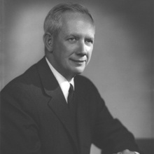

Akre grew up in Washington D.C., graduated from Blair Academy and matriculated to American University, where he obtained a BA in English Literature. After deciding against going to medical school, Akre started in the securities business in 1968.
Akre held positions as shareholder, Director, CEO of the Asset Management Division and Director of Research at Johnston, Lemon & Co. (a NYSE member firm). Akre established his own firm, Akre Capital Management, in 1989 and operated it as part of Friedman, Billings, Ramsey & Co. until 1999. In 2000, ACM became independent again.
Akre established its current location in Middleburg, Virginia in early 2002 while running the FBR Focus Fund, a small- and mid-cap value mutual fund. While Akre was managing the FBR Focus, it performed in the top 1% of small/mid-cap growth funds in 2002, 2004, and 2006, as well as the 2nd percentile in 2001 and the 6th percentile in 2008. In 2008, Akre's FBR Small Cap VAlue fund consisted of $55 million; in total in 2003 Akre managed about $135 million.After breaking from FBR, Akre started the Akre Focus Fund in 2009. As of 2009 the fund had about $800 million in assets, while Akre had a seven figure stake in the fund
Akre Capital Management is a long-term, concentrated value investment firm. Akre's and his team of analysts do intense research, and are known for their contrarian investments, most notably in the cell phone tower space during 2001-2003.
"I've managed the portfolio the whole time and I've never changed the investment approach," Akre said to CNN Money. "We've been all of them. I don't box myself in."
Charles Akre uses an investment philosophy that he calls the "three-legged stool" approach, which calls for examining business models, rates of return, and reinvestment opportunities.The stool is a reference to a three-legged milking stool he keeps in his office – because it is low to the ground, a farmer sitting on it would not fall far if it flipped over. The implication for investing is that if the economy is rattled, fund investors won't be hit with serious damage.
Good investments are businesses that possess four characteristics:
Heavily influenced by Thomas Williams Phelps book "100 to 1 in The Stock Market" and Warren Buffett's letters to Berkshire Hathaway shareholders, Akre coined the term "compounding machines" to describe businesses that are capable of compounding the shareholders' capital at high rates for long periods of time with little risk of permanent loss (not temporary quotational loss) of capital.
Akre is said to have invested in Berkshire Hathaway in 1977. Deeply influenced by Buffett's ideas on investing, Akre keeps a framed letter that Warren Buffett sent him on his office wall. Akre, for example, puts a strong emphasis on finding the competitive advantage of the companies he invests in. "We spend a lot of time trying to figure out what's causing this," he said in an interview with CNN Money. "What is it that allows them to have what the world calls 'the economic moat'?
The investment portfolio is quite tight: Akre's FBR Focus fund often may only have between two and three[1] dozen investments, with the top 10 consisting of 75% of the total assets. Small and mid-cap stocks are the usual targets for investment, because they generally have higher growth rates. He often holds companies for many years.
The company was hit hard by the recession in 2008. "In 2008 we got it wrong. That's just the reality," he told CNN Money. From that point forward they began spending more time with government, economic policy, and sustainability experts in order to "help us think about the world in general in ways that are better than we have in the past."
From December 1996 to October 2009, FBR focus had achieved annualized returns of 12.5%, which "trounced the Russell 2000 Growth index, a measure of small, fast-growing companies, by ten percentage points per year, on average," according to Kiplinger, an investment advice website, which added the company to its list of 25 recommended funds.
Akre has made significant long-term investments in a number of public companies, including American Tower Corporation, Bandag, International Speedway, O'Reilly Automotive (the biggest independent retailer of aftermarket car parts), Ross Stores, Dollar Tree, MasterCard, Markel Corporation, Aeropostale and Penn National Gaming. In these investments, he has tended to focus on the long-term compounding results rather than short-term gyrations in stock price.